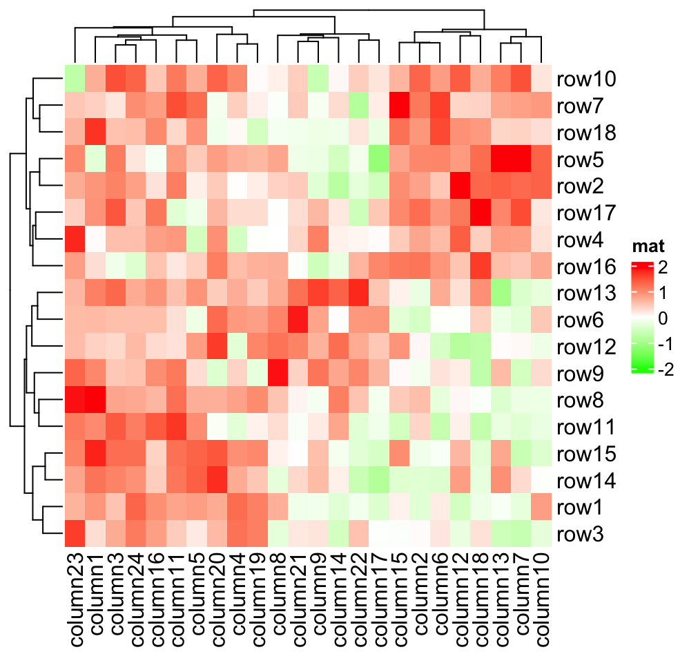
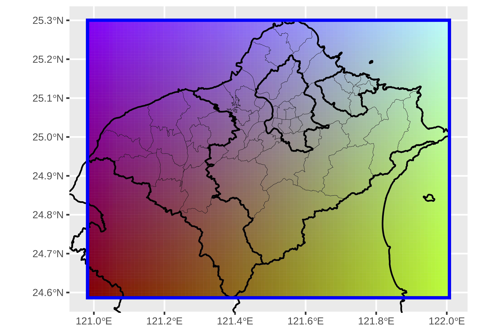

2024-03-18
Mobile phone data is a treasure trove of information, providing insights into the spatiotemporal movements of device users with unprecedented detail. In our latest study, we delve into this data using a novel combination of Matrix Visualization (MV) and Symbolic Data Analysis (SDA) techniques. For our goal, is unravel the complex movement patterns hidden within this vast sea of data.
Understanding the Significance of Mobile Phone Data
Mobile phone data offers a unique perspective on human behavior. Unlike traditional data sources such as household registration or travel surveys, telecommunication signaling data provides real-time insights into human movements. This makes it a valuable resource for researchers and practitioners alike, offering a glimpse into the dynamics of crowds and the interactions between them.
Introducing Matrix Visualization and Symbolic Data Analysis
In our study, we harness the power of MV and SDA to analyze mobile phone data in a new light. By employing dynamic time warping (DTW) to measure trajectory distances, we identify similarities in movement patterns and uncover the spatiotemporal interactions among crowds. This allows us to move beyond traditional analysis methods and gain deeper insights into the underlying structure of the data.
Simplifying Complexity with Interval-Valued Coordinates
One of the key challenges in analyzing mobile phone data is its sheer complexity. Traditional methods struggle to handle the volume and intricacy of the data. Here's a concise list of challenges traditional methods face when analyzing mobile phone signal data and how they can be addressed using Interval-Valued Coordinates:
- High Dimensionality: Traditional methods struggle with the high dimensionality of mobile phone signal data, making it difficult to process efficiently. Interval-Valued Coordinates simplify the representation of data, reducing its dimensionality and improving computational efficiency.
- Complex Trajectories: Mobile phone signal data often contains complex movement trajectories that are challenging to analyze using traditional linear methods. Interval-Valued Coordinates allow for a more flexible representation of trajectories, capturing their non-linear nature more accurately.
- Spatial and Temporal Dependencies: Traditional methods may overlook spatial and temporal dependencies present in mobile phone signal data, leading to biased analyses. Interval-Valued Coordinates provide a framework for capturing these dependencies more effectively, enhancing the accuracy of the analysis.
- Real-time Processing: With the growing demand for real-time analysis of mobile phone signal data, traditional methods may struggle to provide timely insights. Interval-Valued Coordinates enable efficient real-time processing by simplifying data representation and streamlining analysis algorithms.
To address this challenge, we aggregate similar trajectory data into interval-valued coordinates. This not only simplifies the representation of the data but also enhances its interpretability, making it easier to discern meaningful patterns and trends.
Visualizing Crowd Movements with Two-Dimensional Color Spectrums
Visualization is a powerful tool for understanding complex data sets. In our study, we leverage a two-dimensional color spectrum to visualize crowd movements. By mapping interval-valued coordinates onto this spectrum, we can effectively illustrate the spatial distribution of crowds and the range of their movements. This not only makes the data more accessible but also facilitates deeper insights into crowd behavior.
Implications for Research and Applications
Our proposed methodology has far-reaching implications for both research and practical applications. By accurately predicting crowd flows and understanding movement characteristics, we can inform decision-making processes in fields such as urban planning and transportation management. This has the potential to revolutionize the way we approach complex problems and drive innovation across various domains.

Conclusion
In conclusion, our study demonstrates the power of combining Matrix Visualization and Symbolic Data Analysis techniques to explore movement patterns in mobile phone data. By simplifying complexity and enhancing interpretability, we can unlock valuable insights that were previously hidden within the data. As we continue to refine and expand our methodology, we look forward to furthering our understanding of human behavior and its implications for society. Stay tuned for more updates on our research findings and their implications for the future. For the end, if you are interesting of this research, check this for fulltext.
ComplexHeatmap-reference
https://jokergoo.github.io/ComplexHeatmap-reference/book/index.html
Matrix visualization and clustering of the mobile phone data based on symbolic data analysis
https://ndltd.ncl.edu.tw/cgi-bin/gs32/gsweb.cgi?o=dnclcdr&s=id=%22110NTPU0337017%22.&searchmode=basic